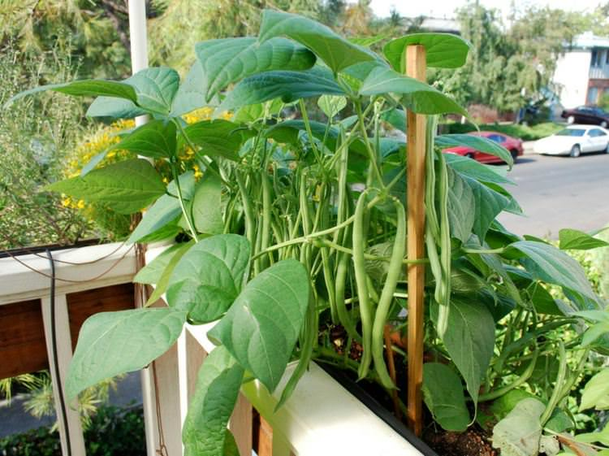

Going MINI with a garden?
Going MINI with a garden?
Only fake plants? Plants react to their environment, i won't want them constantly negatively reacting to other plants getting eaten... [there's not much research about this yet though, to my limited knowledge] I want a big kitchen though, to cook and bake :D
I want a comfy bed with lots of pillows and somewhere to place all my stuff toys. Oh and also I've always wanted a place for art stuff like crochet items and weaving basket items and music boxes! As you can tell, I have a lot of things I want to collect... Oh no. What about plants? Well, plants in the open will respire and suffocate me.. So HOW? Well, there is a solution! Precious little terrariums! A shelf showcasing lots of terrariums would be AMAZING!
A wardian case! The early form of a terrarium!

|
 |
Vertical planters with all sorts of varieties of plants (dwarf varieties) would be so cute and pretty at the same time! Another idea is vertical hydroponic pillars to grow food and hydroponic drip watering like 'terraplanter'. There is so much possibility in these like vertical lighting systems and also movable columns of plants or rotating pillars or columns to grow the plants! It's time to stop imagining hydroponics as just some PVC pipes with holes! Wait... is this my house or an indoor farm??
This might be impossible if I want to have a cat in the future, which is something I'm still contemplating. If i have a cat, then i will have to keep plants out of reach. Most of the plants I want to grow are edible plants, so maybe not poisonous to it, but I may plant catnip and cat friendly plants for it instead! Also, there is no space for a TV. Oopsie
If I do have a staircase, I would want to hang plants on those grid racks. Drip irrigation or a water cycling system or something like a waterfall watering system would be very very cool.

Planters hung by strings look good but are a pain to maintain. Grid racks are a unique, aesthetic way to vertical farm in my opinion! If the grids are modeled into many shapes it can be used for horticulture artistry maybe?
Not the typical work room! We want to be in the MOOD to study. How?? Well, there are some things I want in this room!
I would plant fruiting plants and also flowers... I want those round garden arches! (how will it even fit i thought i was thinking of HDB...) Maybe grow some beans, bittergourd, squash, grapes?? I dont know if grapes can be grown in Singapore... For flowers I grow one right now that attracts wasps and houses this garden lizard. I don't know it's name but it is a nice flower to grow. I grew Japanese roses before and they are pretty as well. Flowers are a rare and beautiful delight especially since it is so hot in Singapore... colder countries have beautiful flowers growing everywhere, making me wonder how we got our 'Garden City' title
If you are still reading, thank you haha! I may want a herbs garden for drink making, and also a space outside my house to share the things i bake or my plants with my neighbours... Again, HDB won't have this space eh? haha... Imagining a house of plants was fun. I wonder what your imaginary house looks like? Mine used to be a wooden cabin by a lake before I wrote this! Peaceful and calm unlike this mess of ideas hehe... I've seen those videos of people with chipmunks visiting them and bird feeders in other countries and wow is that cool! But in those countries they have scary ant species like army ants and giant bees, wasps and spiders which i cannot deal with! A treetop house that is fully sustainable, a bamboo house... so many interesting ways to live! There's even an artist on youtube who turned his basement into a hobbit hole! In the end, 'home' is different for everyone and may just be where those we love are :> I'm very grateful for my current home!